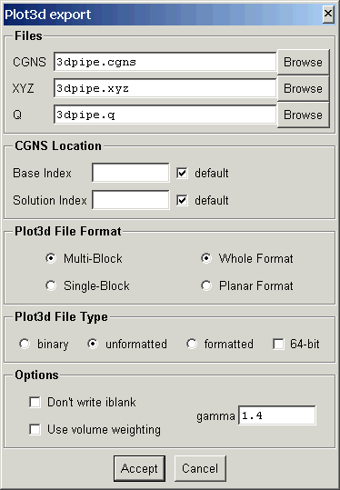
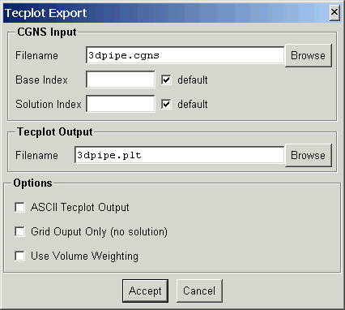

This document describes the export routines which convert data CGNS to other formats. The following export utilities are currently available.
| PLOT3D | cgns_to_plot3d | Converts a structured CGNS file to PLOT3D file |
| Tecplot | cgns_to_tecplot | Converts a Tecplot file to CGNS |
Converts a CGNS file containing a structured grid to a PLOT3D XYZ file and Q file (if a solution is present).
The program is executed from the command line as:
cgns_to_plot3d options CGNSfile XYZfile Qfile
The input CGNS file, CGNSfile, and PLOT3D XYZ output file, XYZfile, are required. The grid from the CGNS file will be written to the PLOT3D XYZ file. Interfaces in the CGNS file will be output as an iblank array in the XYZ file unless disabled by the -n command line option. If Qfile is specified and a solution exists in the CGNS file, it will be written to Qfile. The command line aptions are:
| option | description |
| -s | write as single block PLOT3D file |
| -p | write planar grid format |
| -n | don't write an iblank array. (default is to write one only if interfaces exist) |
| -f | write formatted (ASCII) PLOT3D file. (default is binary) |
| -u | write Fortran unformatted PLOT3D file. (default is binary) |
| -d | use double-precision (64-bit) |
| -b base | use CGNS base index base. |
| -B name | set CGNS base name to name. |
| -S sol | solution to use if multiple (default 1) |
| -w | use volume weighting |
| -g gamma | gamma for data conversions (default is 1.4) |
The following panel is created when launched from the ADFviewer GUI:

This allows interactive selection of the input and output files and options. The Accept button will then construct the command line and run cgns_to_plot3d.
Converts a CGNS file to a Tecplot file.
The program is executed from the command line as:
cgns_to_tecplot options CGNSfile Tecplotfile
The input CGNS file, CGNSfile, and Tecplot output file, Tecplotfile, are required. The command line aptions are:
| option | description |
| -a | write ASCII Tecplot file (default is binary) |
| -b base | use CGNS base index base. |
| -B name | set CGNS base name to name. |
| -S sol | solution to use if multiple (default 1) |
| -w | use volume weighting |
The following panel is created when launched from the ADFviewer GUI:

This allows interactive selection of the input and output files and options. The Accept button will then construct the command line and run cgns_to_tecplot.